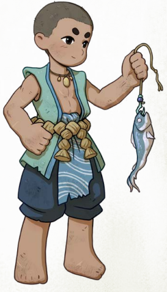
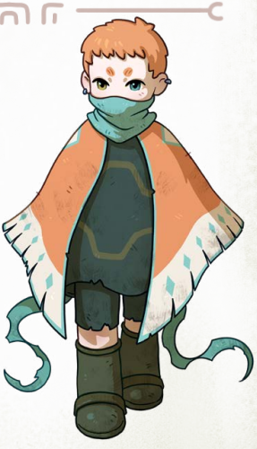
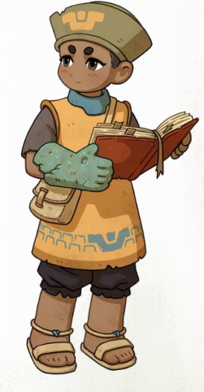
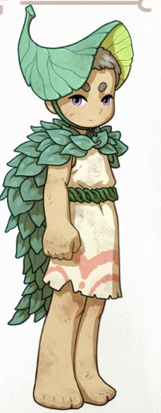

Chaque Vagabond possède une origine différente selon l’endroit où son œuf de pierre a éclot.
Ces origines influencent leur personnalité, leur manière de survivre et leur vision des Ruines.
Un écho des eaux des Ruines – calmes, tumultueuses, profondes...

Vos premiers souvenirs sont ceux d’éclats de pierre frappant l’eau,
d’un plouf et d’un clapotis lorsque votre œuf de pierre a éclot.
Certains Vagabonds s’éveillent sur la terre ferme, mais vous, vous avez connu l’eau en premier.
Les Nés-des-rives sont rares et souvent solitaires.
Ils restent proches des rivières, des lacs et des zones humides des Ruines.
Leur comportement peut sembler imprévisible aux autres Vagabonds.
Le vent dans tes cheveux, une éternité à tes côtés.

Certains Vagabonds s’éveillent dans des endroits sombres ou isolés,
mais vous, vous avez ouvert les yeux sur un monde entier suspendu sous vos pieds.
Les premières décisions sont souvent difficiles pour les Éclos-des-ponts,
car chaque direction semble possible et pleine de promesses.
Ils prennent souvent le temps d’observer avant d’agir.
Ces Vagabonds sont attirés par les hauteurs et les anciens passages suspendus.
Ils possèdent souvent un regard attentif qui leur permet de remarquer des détails oubliés.
Nous ne sommes jamais vraiment seuls.

Vous vous êtes réveillé entouré de nombreuses statues silencieuses,
comme si d’autres Vagabonds dormaient encore autour de vous.
Cette présence vous a rassuré dès le début de votre voyage.
Vous avez toujours ressenti une certaine facilité à voyager avec les autres.
Les Éveillés-des-Multitudes sont souvent sociables et ouverts.
Ils préfèrent rarement la solitude et cherchent naturellement la compagnie.
Une extension de la nature sauvage, peut-être ?

Votre statue était enlacée par des racines et recouverte de végétation.
À votre réveil, vous étiez déjà entouré par la nature des Ruines.
Les Réveillés-par-les-Rameaux développent naturellement un lien fort avec la faune et la flore.
Ils semblent comprendre les environnements sauvages plus facilement que les autres Vagabonds.
Grimper, se déplacer dans la végétation et survivre dans la nature
font souvent partie de leurs instincts les plus naturels.